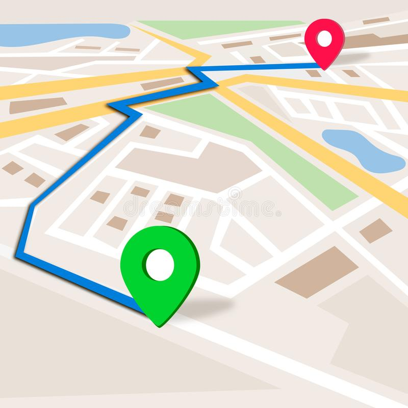

1. Краткое описание приложения
Данное веб-приложение предназначано для автоматического прокладывания маршрутов по малым городам России. Тажке в этом приложении можно узнать краткую информацию о городе. В приложении есть панель администратора, где можно добавить, редактировать или удалить достопримечателности. Вся информация хранится на сервере.

- Увеличение туристического потока в малых городах России
- Увеличение информационной базы по туризму в России
- Развития навыков веб-разработки, освоение новых навыков и умений, изучение новых библиотек